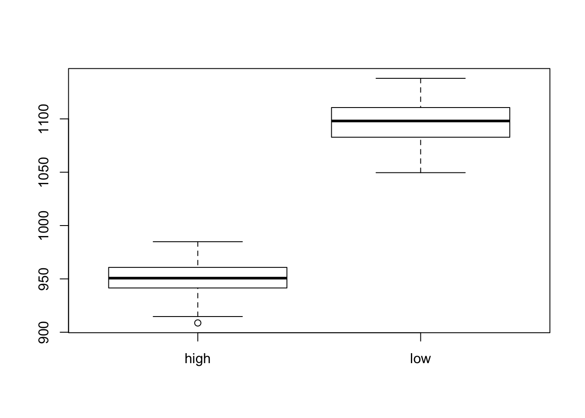
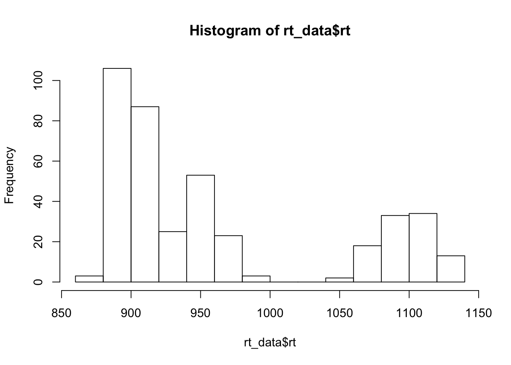
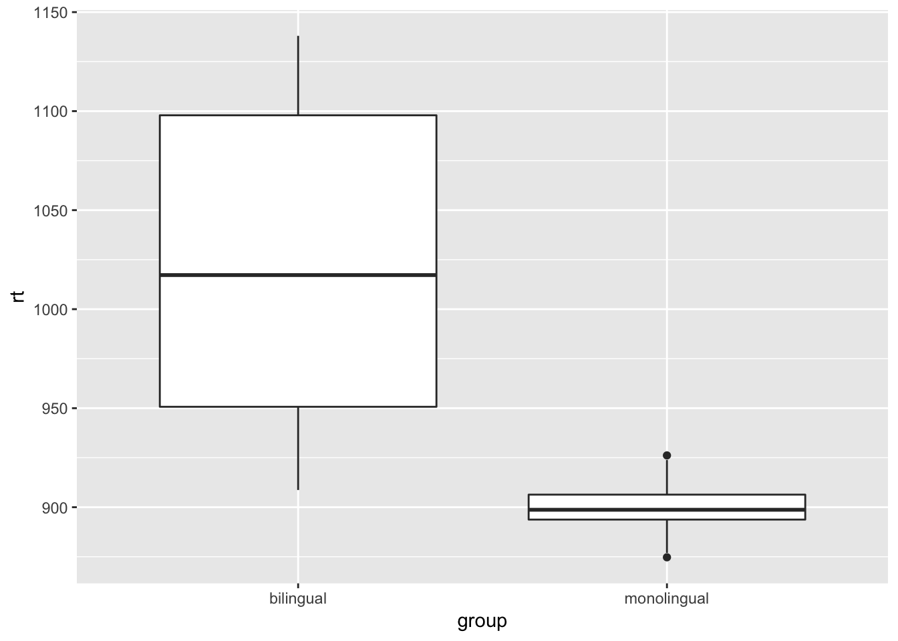
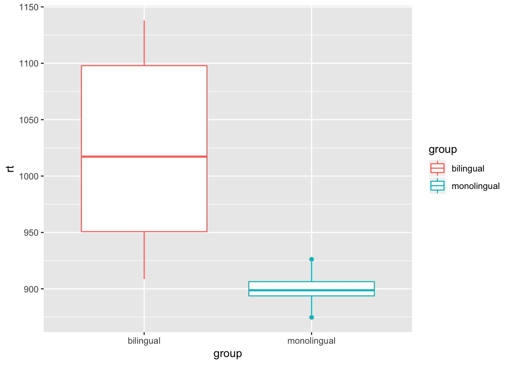
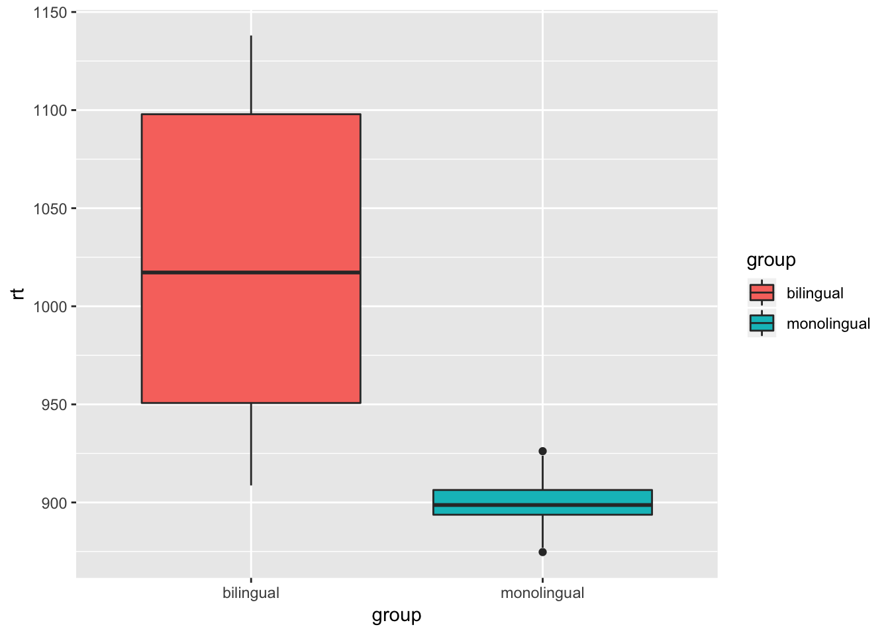
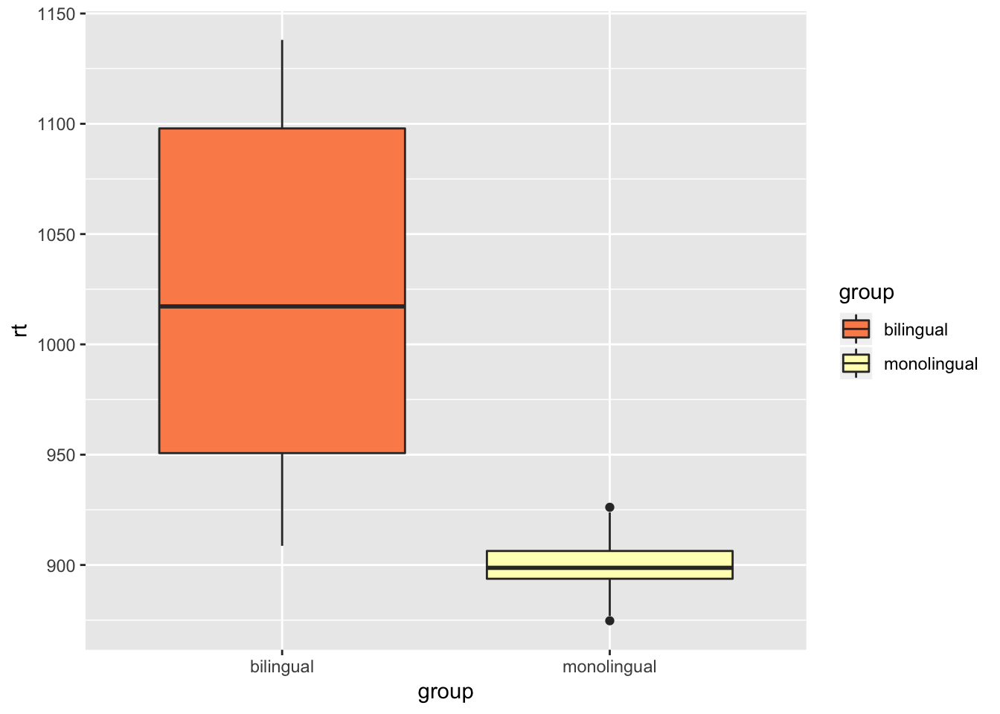
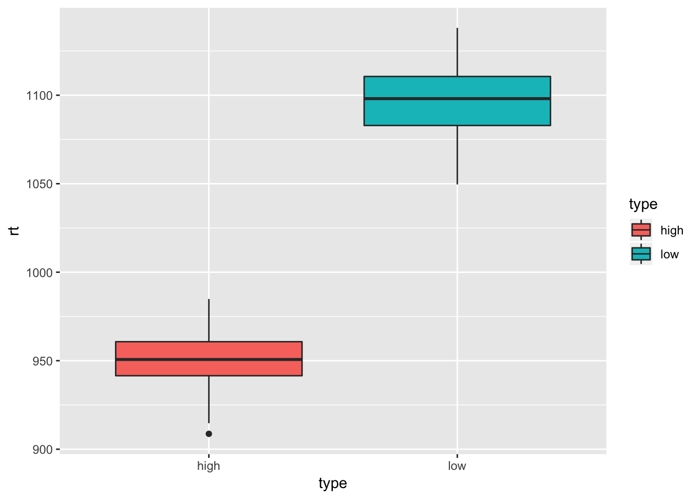
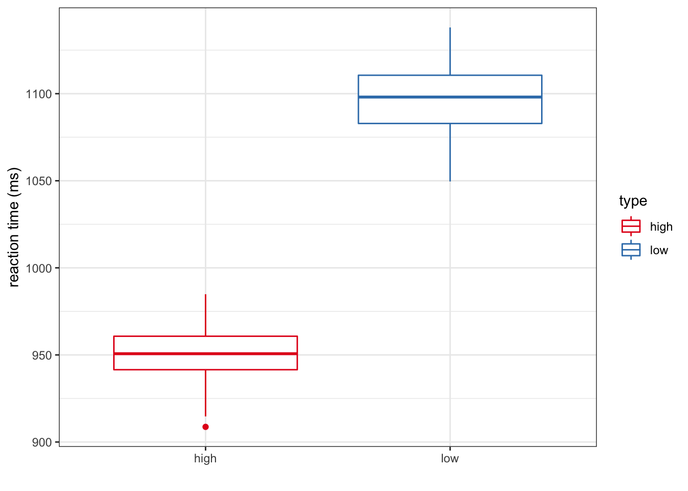
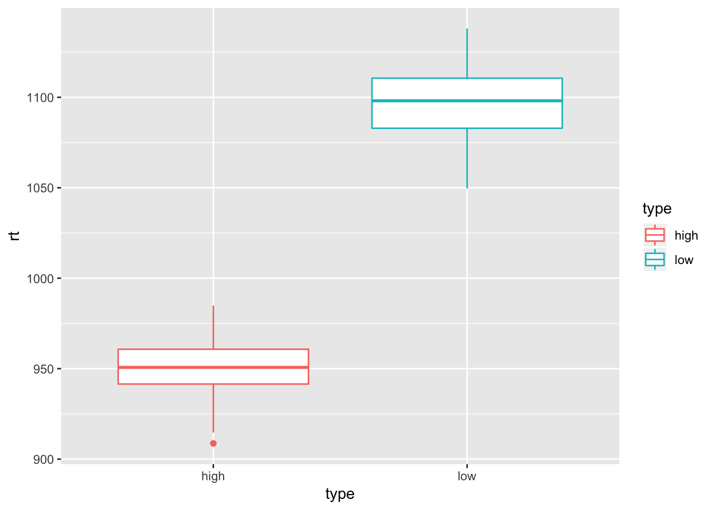
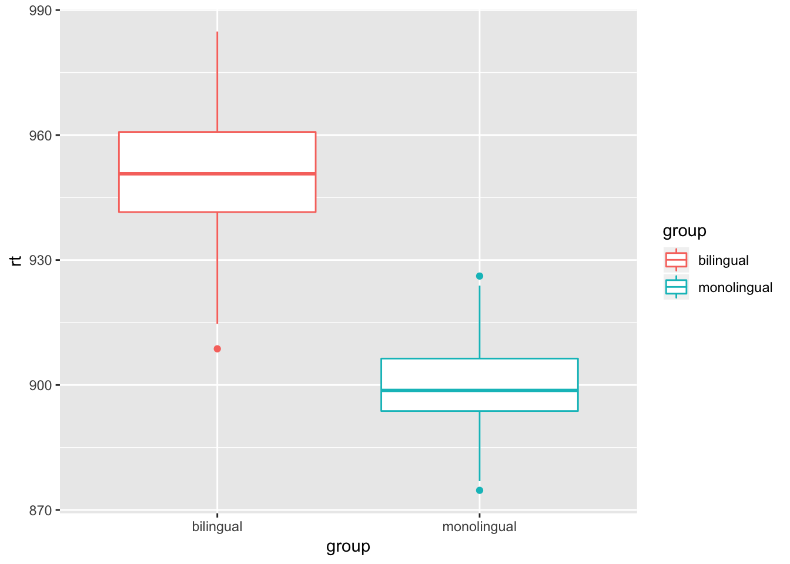

Last week, we looked at categorical variables from the dialect dataset. We learned how to look at data summaries, and make graphs in both Base R and ggplot2.
Today we will look at a continuous linguistic variable, reaction time. The following (made up) dataset contains reaction time data from a word recognition task. Bilingual and monolingual speakers were given a task where they have to decide if a word is part of their language or not. The reaction time measures how long it took them to decide. Download the dataset for today by right clicking here and selecting save link/target as.
Today I would like you to try running the commands in your own script, rather than using the R notebook.
If you would really prefer to use the R notebook, you can find it here.
As usual, the first thing we want to do before we start is load in the relevant packages for today.
## LOAD PACKAGES ####
library(dplyr) # this is a package that makes handling data easier##
## Attaching package: 'dplyr'## The following objects are masked from 'package:stats':
##
## filter, lag## The following objects are masked from 'package:base':
##
## intersect, setdiff, setequal, unionlibrary(ggplot2) # this is a package that makes nice graphsAgain, you might see some messages, but that is fine.
Remember, if this doesn’t work (probably only if you’re doing this on your own computer), you may need to install the packages. You only have to install a package once, but you have load a package in (like we just did above) every time you open R. To install a package for the first time, you can go to ** tools > install packages… >** and then search for the name of the package. You can also run it directly through the console by inputting install.packages("dplyr").
The data itself needs to be in the same folder R Notebook document. That means we can easily load it in without having to specify the full path (i.e. location) of the document. Try running the following code and see if it works:
## LOAD IN DATA ####
rt_data = read.delim("HSS8005_reactiondata.txt")This probably won’t work just yet. That’s because, if you’re not using a notebook or an R project (next session), we need to specify the exact location i.e. path of the data. You can find this out in various ways (try Googling ‘how to find a file path’), but I usually navigate to the file in its directory and right click to select Properties (Windows) or Get Info (Mac).
The other way to do it is to set the working directory for the session to the folder your script is saved in. God to Session and then Set Working Directory > To Source File Location. Try editing the path, or changing the working directory and then run your code to load in the dataset.
Do you notice anything different about the call function here? This dataset is a .txt file, not a .csv file. Do you know the difference between these types of file? It doesn’t matter which one yours is, but you need to make sure the call is read.delim() for .txt files and read.csv() for .csv files
We have called our dataset rt_data (which stands for reaction time data) and we should now be able to see it in the right corner panel under Environment as one of the things we have loaded in.
This data is kindly donated by Page Piccinni, who has a fantastic (if a little advanced) R course online here: (https://pagepiccinini.com/r-course/)
Let’s look at our data to get a feel for what is in there:
dim(rt_data)## [1] 400 3How many rows and columns does the data have?
Let’s have a look at the top six rows:
head(rt_data)Is there some missing data here? Or should we expect to find this?
How about the bottom six?
tail(rt_data)What are the names of the columns?
colnames(rt_data)## [1] "group" "type" "rt"Which is our dependent variable, out of these three?
Let’s use the levels() function from last week to take a closer look at some of the columns.
# Look at factor levels for some columns
levels(rt_data$group)## [1] "bilingual" "monolingual"levels(rt_data$type)## [1] "high" "low"So it looks like the group factor has two levels and so does the type factor. Consider what these two factors represent in the dataset. Why did it look like there was missing data when we read in the head command before?
We can also see how many tokens there are of each by looking at a table of what’s going on. Let’s have a look at group:
table(rt_data$group)##
## bilingual monolingual
## 200 200And type:
table(rt_data$type)##
## high low
## 100 100Why are the numbers not the same? What is type?
Anyway, our dependent variable here is rt or reaction time. Can we look at the factor levels of that?
levels(rt_data$rt)## NULLWhat does this mean? Why is it saying this?
Let’s try something else:
summary(rt_data$rt)## Min. 1st Qu. Median Mean 3rd Qu. Max.
## 874.7 898.7 922.3 961.8 1001.0 1138.0OK, so it looks like we have reaction time data, which is our continuous dependent variable, and we can look at this across two potential independent variables. group tells us if someone is bilingual or monolingual, and type gives us extra details about the bilinguals, on their profiency in their second language.
We’ve already learnt how to make barplots. However, these are for when we have a categorical dependent variable. When we have a continuous dependent variable, and categorical independent variables, the best option is usually a boxplot.
We can make boxplots very quickly and easily in Base R. We have the dependent variable first, then the ~ tilde symbol, then the independent variable we’re interested in. Try running this for the reaction time across the type variable:
boxplot(rt_data$rt ~ rt_data$type) What does this graph show us?
Try it yourself for the group variable in the chunk below
# plot and run the group variable in this chunkWhat does the graph show you? What differences or similarities do you spot in the two plots?
We also might want to view the general distribution of the reaction times, which we can do with a histogram:
hist(rt_data$rt) I wouldn’t always use histograms in my report, but they are very useful for showing you the distribution of the data. For example, I can immediately see here that the data is not normally distributed but, in fact, seems to have a bimodal distribution.
As we learnt last week, the syntax of ggplots is slightly more complicated, but it is more customisable, and looks much nicer. Let’s try a boxplot in ggplot2 using the geom_boxplot() call:
ggplot(rt_data, aes(x = group, y = rt)) +
geom_boxplot()
Try making it more colourful by setting the factor levels of group to colour
ggplot(rt_data, aes(x = group, y = rt, colour = group)) +
geom_boxplot()
Or you can use fill to fill them in:
ggplot(rt_data, aes(x = group, y = rt, fill = group)) +
geom_boxplot()
Remember our colour palettes from last week?  Note, if we’re setting the fill it needs to be scale_fill_brewer and if we’re setting the colour it needs to be scale_colour_brewer.
There is no way to save plots separately from an R Notebook. If you are working with this as a notebook, instead, drag up the console from the bottom of the screen and run your code in there. Your plot should now show in the bottom right panel, and there is an option to export here. If you are copying and pasting from the website anyway, this instruction is not relevant for you.
Try it yourself. Create your own plot of the group variable with different colours:
Now try making a ggplot of the type variable:
What do you notice about this graph? Are there any potential problems with it? Do we need to do anything with the data?
What are NAs? NA stands for not applicable and means that there is data missing for that cell. In this case, it is part of the experimental design. in other cases, it might be an accident, and you may have to go back and check you don’t have missing data.
As you may have realised above, we only have type data for the bilinguals, which makes sense given this experiment. Therefore, it doesn’t really make sense to look at the monolinguals when we are considering if someone is high or low profiency. This is where creating subsets comes in useful in R. We can create a subset for just the bilinguals.
As usual, there are always a few ways to do things in R. We’ll start with the basic way, and move on to the more advanced way using dplyr later.
Here’s how we can create a bilingual subset in base R:
bl_data = subset(rt_data, group =="bilingual")Here we come across the double equals sign. So far, we’ve been using = a single equals sign to assign things to variables. Remember I also said people often use <= instead of = and it does the same thing. The double equals sign == means must equal, so R will only return those factor levels which have bilingual in them.
Let’s use the usual functions to have a look at this new subsetted dataset:
dim(bl_data)## [1] 200 3head(bl_data)tail(bl_data)Now we can try to make a plot of type without the monolinguals, by using our new subset:
 What can we conclude from this graph?
Once you’ve done that, you could look at other things that you can play around with in the settings of ggplot2. Here you can find the ggplot cheat sheet.
Here’s my final graph that I think looks nice: 
dplyrWe can also subset in dplyr. Not only can we do this in a similar way to above, by creating a new dataset, we can also pipe straight into a ggplot. Let’s look at both ways.
The code below creates another subset of the bilingual data. This should be exactly the same as our old one. I’ve just given it a different name:
bl_data_dplyr = rt_data %>%
filter(group == "bilingual")Again, we see the use of the double equals. We also see the dplyr verb filter. For a list of all possible dplyr verbs, see the following cheatsheet: (https://www.rstudio.com/wp-content/uploads/2015/02/data-wrangling-cheatsheet.pdf)
Let’s use the usual functions to have a look at this:
dim(bl_data_dplyr)## [1] 200 3head(bl_data_dplyr)tail(bl_data_dplyr)It looks exactly the same, so we won’t make any new plots.
** ADVANCED** You can use whichever of these two ways you prefer, but one benefit of the second way is that you can actually use similar syntax to pipe the subset directly into a ggplot. That way, you don’t even have to create a new subset.
rt_data %>%
filter(group == "bilingual") %>%
ggplot(aes(x=type, y=rt, colour=type)) + geom_boxplot()  This just pipes rt_data through, filters out anything that’s not bilingual, and then plots it. So you can see, there’s no dataset in the usual place in the ggplot call, because that comes earlier.
We can also put different conditions on subsets. The != operator means not equals to. So this would give us the same thing as before:
bl_data_dplyr = rt_data %>%
filter(group != "monolingual")Maybe we just want to look at people who responded in under a second. We could create a dataset that can account for this using the < sign (you can also use > than).
quick_rt_data = rt_data %>%
filter(rt < 1000)Or plot this directly:
rt_data %>%
filter(rt < 1000) %>%
ggplot(aes(x=group, y=rt, colour=group)) + geom_boxplot() 
If you’ve finished all of this, try making some extra graphs of your own and changing the parameters using the cheatsheets above. Then try outputting this document to pdf, word or html.
You can convert this entire notebook into a pdf, html or Word document by going to the little triangle drop-down menu next to Preview and choosing one of the Knit to… options. This is how I’d like you to submit your assessment for class, but it is also handy for writing up your quantitative work, as your R code is embedded in your document.
As you start to publish your work, you won’t want the R code itself to show, but just the output. This is easy to do by setting the option echo = FALSE. Try previewing the document, or knitting the document to pdf, html or word, and compare the chunk below with earlier ones:
## [1] 4Can you see this stops it from replicating the code?
Markdown is a very simple language. You use stars for italics, and you use double stars for bold. Hashes indicate new sections and the level of that section (i.e. two hashes are a subsection). Check out the R markdown cheatsheet here. You can see I just made a clickable link in the previous sentence. Have a look at what that looks like in your knitted output. For your next task, have a play around with different options in R markdown.